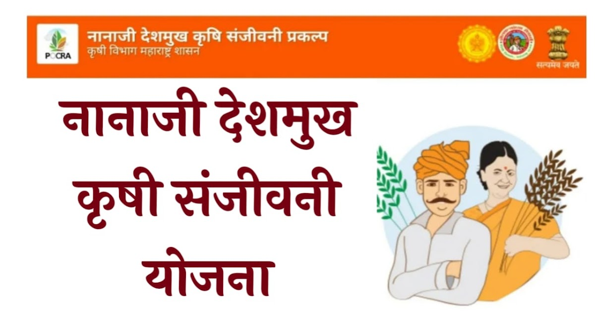

The Nanaji Deshmukh Krishi Sanjivani Prakalp was conceptualised by the Department of Agriculture, Government of Maharashtra and the World Bank to develop a drought-proofing and climate-resilient strategy for the agriculture sector as a long-term and sustainable measure, to address the likely impacts of climate variabilities and climate change. The project focuses on the evidence-based scientific implementation of this plan.
Benefit
1.Back ended financial subsidies for Farmers to adopt climate resilient agricultural initiatives in their farms
2.Financial assistance available for protected cultivation techniques such as Poly House, Poly Tunnels, etc.
3.Subsidy also available for on farm water conservation activities such as Drip, Sprinklers, Farm Pond, Farm Pond linings, etc.
4.Climate Resilient seed production also covered
5.Special assistance for Farmer Producing Organizations/companies and Self Help Groups
6.Disbursement through Aadhaar enabled payment system
7.Privilege given to women, person with disabilities and landless labourers
Eligibility
1.Farmers producer companies under the project in the district, registered farmer groups/self-help groups in the project village.
2.In the project, FPC’s registered with a minimum of 100 members from the district will be eligible to avail benefits under the agribusiness components.
3.For the project, any eligible group of interested/qualified farmers/women/landless individuals registered with any govt. department (e.g., ATMA, MAVIM, MSRLM etc.) selected in the village can apply for the Prime Minister's Farmer Scheme, based on the family's eligibility criteria (husband, wife, and dependent children over 18 years of age). The explanation of the family's composition from different families within the group, with a minimum of 11 members in each family, is necessary. The benefits of the agribusiness components should not be directed solely towards one family; attention should be paid to this aspect.
4.The financial condition of applicant farmers' producer companies/registered farmers/self help groups is proposed to be capable enough to establish and operate agricultural input service centers/industries.
5.The project mandates that loans sanctioned to farmers' producer companies/registered banks/financial institutions for projects exceeding Rs. 20.00 lakhs must be approved. The approved amount of the existing loan should be at least 1.25 times the minimum grant aid.
6.The proposal of Rs. 20.00 lakhs will be funded through self-financing. In such proposals, assurance should be given that the required funds are available in the registered bank account of the group/company or will be raised from the members (include this decision in the company/group resolution). While providing financial assistance under the project, the expenditure incurred for the project from the bank account of the group/company will be considered eligible for reimbursement.
7.If there's a loan involved, it's essential for the farmers' producer company and registered farmers/self help groups to enter into a tripartite agreement with the registered bank/financial institution and the relevant project management authority.
Documents Required
1.Aadhaar Number
2.Land details – 8A & 7/12 extract
3.Cast certificate (for applicants from SC ST communities)
4.Landless certificate (for landless farmers & labourers)
5.Death certificate of husband (for Widows)
6.Divorce certificate (for divorcee female)
Application Process:
Application Link:Click here
Step 01: Registration
Step 02:Application
Step 03:Pre-sanction by Agriculture officer
Step 04: Work completion by farmer
Step 05: Payment request by farmer
Step 06: Payment approval by the project
Step 07:Payment disbursement in Aadhaar linked bank account of the beneficiary farmer